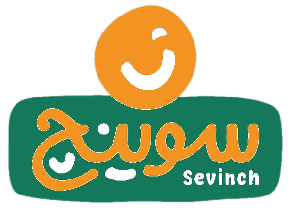
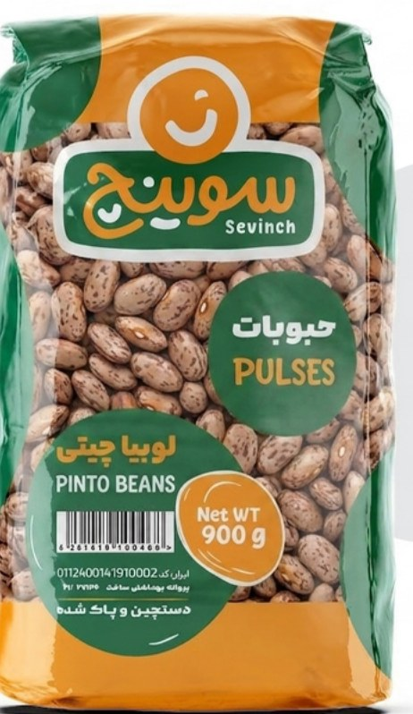
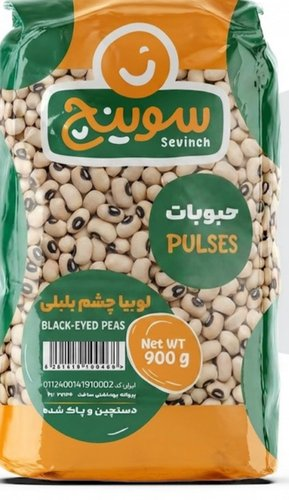
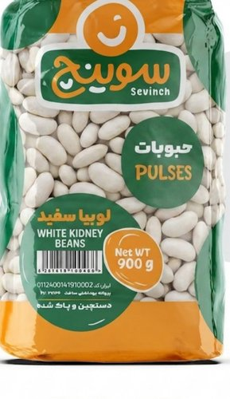
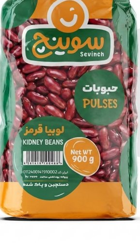

لوبیا چیتی سوینج با پوستی نازک و مغزی خوشپخت، یکی از پرمصرفترین انتخابها برای خورشهای خانگی و لوبیاپلوی معطر است.

لوبیا چشمبلبلی معطر با طعمی خاص و فیبر بالا؛ عالی برای سالاد و خورشهای محلی.

لوبیا سفید درشت و یکدست، دستچین و پاکشده؛ انتخاب اول خورش لوبیا سفید.

لوبیا قرمز پرمغذی و خوشرنگ؛ جزو ارکان خورش قرمهسبزی و چیلی.